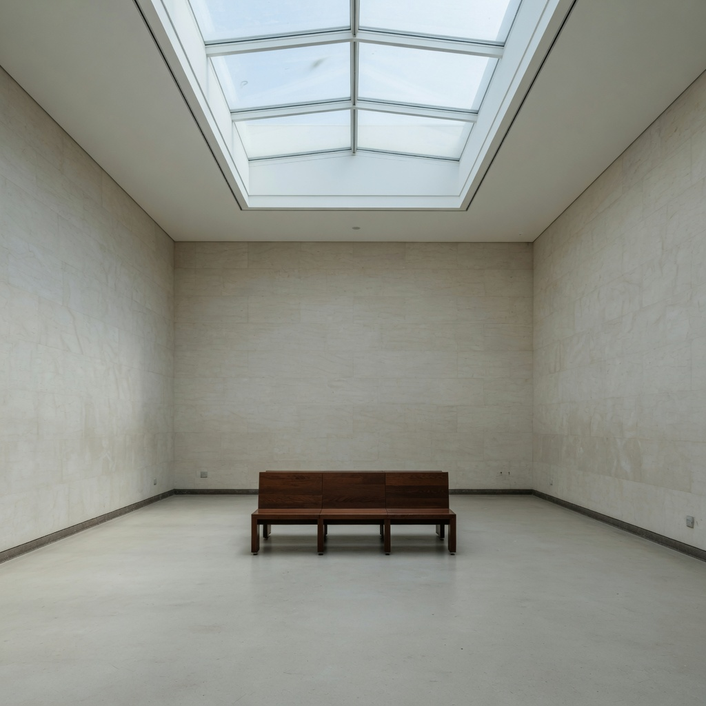
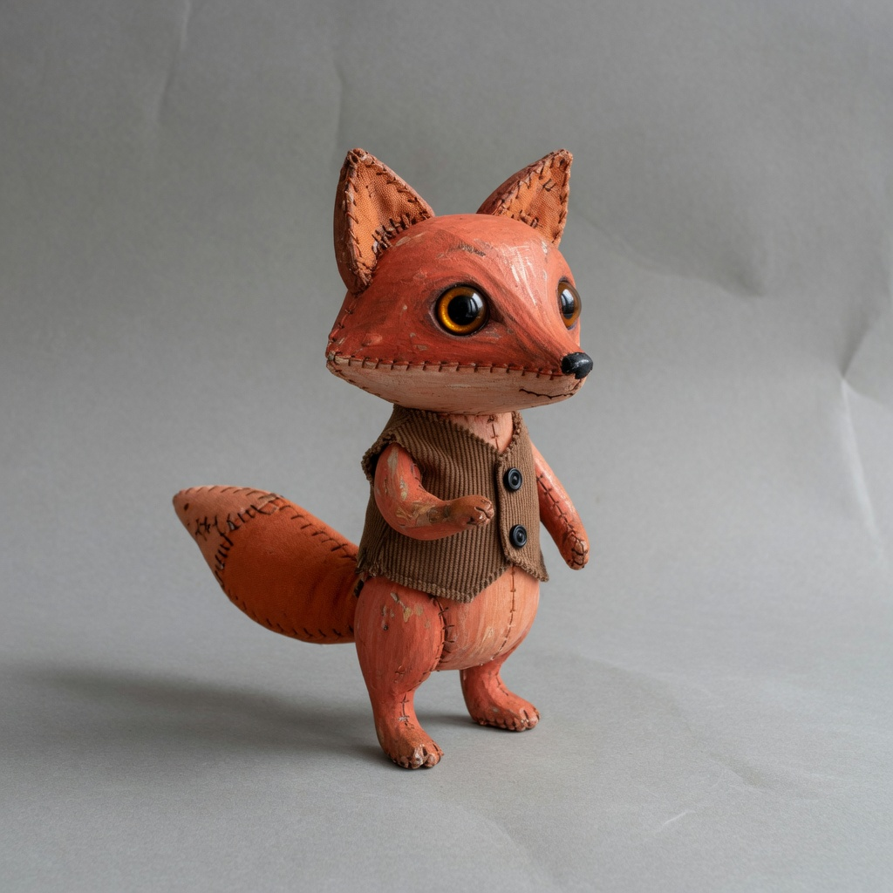
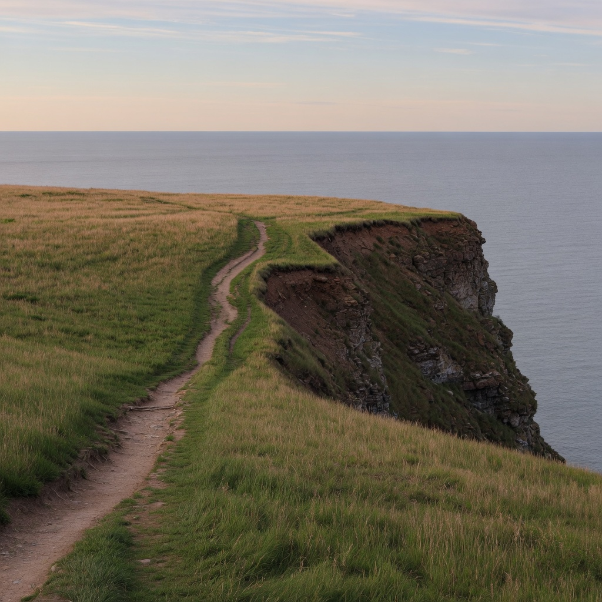

Locked anchor set
Generate five neutral reference subjects used by later single-axis edits.
Five anchors generated and reused as edit sources. Seed control remains unavailable.
architecture or interior

baseline
stylized character or creature

baseline
landscape

baseline
ordinary physical object

baseline
human portrait
Entanglement
- none
Next
- none